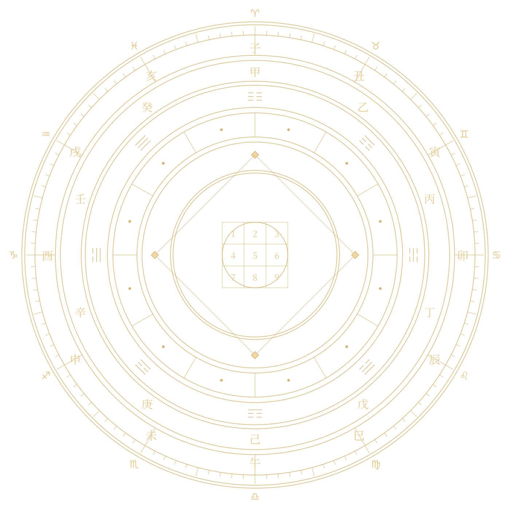

<!doctype html><html lang="ko"><meta charset="utf-8"><meta name="viewport" content="width=device-width,initial-scale=1"><title>자오선 · 인트로</title><style>@font-face{font-family:"Pretendard Variable";font-weight:400 700;src:url("assets/fonts/pretendard-variable-subset.woff2") format("woff2");font-display:block}
@font-face{font-family:"Noto Serif KR";font-style:normal;font-weight:900;src:url("assets/fonts/noto-serif-kr-900.woff2") format("woff2");font-display:block}
*{box-sizing:border-box}body{margin:0;background:#050c17;color:#f4e9d6;font-family:"Pretendard Variable",Pretendard,sans-serif}.scene{height:100svh;min-height:600px;position:relative;overflow:hidden;isolation:isolate;background:#050c17}.sky{position:absolute;inset:0;width:100%;height:100%;object-fit:cover;opacity:.7}.art{position:absolute;right:0;top:0;width:62%;height:100%}.wheel{position:absolute;width:min(78vh,95%);aspect-ratio:1;left:50%;top:48%;transform:translate(-50%,-50%);opacity:0;animation:reveal 1.8s .6s both}.wheel img{width:100%;height:100%;animation:rotate 140s linear infinite,chartDim 4.2s linear both;filter:drop-shadow(0 0 5px #c5944b44)}.axis{position:absolute;top:8%;bottom:8%;left:50%;width:1px;background:linear-gradient(transparent,#d8ad68,transparent);transform:scaleY(0);animation:axis 1s .1s both,chartDim 4.2s linear both}.node{position:absolute;width:7px;height:7px;border-radius:50%;background:#ffe6a9;box-shadow:0 0 16px #f6c36d;opacity:0;animation:reveal .7s both}.character{position:absolute;height:84%;max-width:100%;object-fit:contain;bottom:-3%;left:50%;transform:translateX(-50%);opacity:0;animation:person 1.7s 2.2s both;}.copy{position:absolute;left:8%;top:50%;width:33%;transform:translateY(-50%);opacity:0;animation:reveal 1.4s 3.2s both}.eyebrow{font:12px "Pretendard Variable",Pretendard,sans-serif;letter-spacing:.28em;color:#c7a56d}.copy h1{font-size:clamp(48px,5.7vw,88px);font-family:"Noto Serif KR",serif;font-weight:900;letter-spacing:.04em;margin:22px 0 24px}.desc{font:16px/1.9 "Pretendard Variable",Pretendard,sans-serif;color:#c6c7cc;word-break:keep-all}.systems{font:12px/2 "Pretendard Variable",Pretendard,sans-serif;color:#aa9270;margin-top:22px}.controls{position:absolute;bottom:25px;left:8%;display:flex;gap:12px;z-index:5}button{border:1px solid #b1915b66;background:#091322bb;color:#dbc69f;border-radius:30px;padding:10px 18px;cursor:pointer}button:hover{background:#253044}button:focus-visible{outline:2px solid #efd2a0;outline-offset:4px}.note{position:absolute;bottom:28px;right:24px;font:10px Arial;color:#a9b0bf}
@keyframes reveal{from{opacity:0}to{opacity:1}}@keyframes axis{to{transform:scaleY(1)}}@keyframes rotate{to{transform:rotate(360deg)}}@keyframes person{from{opacity:0}to{opacity:1}}@keyframes chartDim{0%,42%{opacity:1}48%,93%{opacity:0}100%{opacity:1}}
@media(max-width:650px){.scene{min-height:650px}.art{width:100%;height:60%;top:0}.wheel{width:94%;top:48%}.character{height:90%;bottom:-6%}.copy{top:auto;bottom:10%;left:7%;width:86%;transform:none;text-align:center}.copy h1{font-size:42px;margin:12px 0}.eyebrow{font-size:10px}.desc{font-size:14px;margin:8px 0}.systems{font-size:10px;margin-top:10px}.controls{left:50%;transform:translateX(-50%);bottom:22px;white-space:nowrap}.note{right:10px;bottom:4px;font-size:8px}}
@media(prefers-reduced-motion:reduce){.wheel,.character,.copy,.node{animation:none;opacity:1}.axis{animation:none;transform:scaleY(1)}.wheel img{animation:none}}

/* ===== 영상(릴스·클립)용 세로 1080x1920 전용 배치: 버튼 없음, 앱 화면이 덮는 곳 안쪽에 배치 =====
   네이버 재생 화면: 위 y<125 / 오른쪽 x>=905 (y 830~1780) / 아래 y>=1485.  인스타 릴스: 아래 y>=1540, 오른쪽 x>=950
   → 그림(차트+캐릭터) y 150~980, 글자 y 1012~1415, 안내 y 1426~1452 */
html,body{width:1080px;height:1920px;overflow:hidden;background:#050c17}
.scene{width:1080px;height:1920px;min-height:0}
.controls{display:none!important}
.art{left:-22px;right:auto;top:150px;width:1080px;height:830px}
.wheel{width:760px;top:50%}
.node{width:8px;height:8px}
.character{height:100%;bottom:0}
.copy{left:0;top:1012px;width:1080px;padding:0 70px;transform:none;text-align:center}
.eyebrow{font-size:22px;letter-spacing:.3em}
.copy h1{font-size:112px;margin:16px 0 14px;line-height:1.15}
.desc{font-size:37px;line-height:1.6;margin:0 0 10px}
.systems{font-size:26px;line-height:1.75;margin-top:10px}
.note{left:0;right:0;bottom:auto;top:1426px;text-align:center;font:22px "Pretendard Variable",Arial,sans-serif;color:#a9b0bf}
</style><main class="scene"><div class="art"><div class="axis"></div><div class="wheel"><i class="node" style="left:93.0%;top:50.0%;animation-delay:0.9s"></i><i class="node" style="left:71.5%;top:87.23909236273086%;animation-delay:1.08s"></i><i class="node" style="left:28.50000000000001%;top:87.23909236273087%;animation-delay:1.26s"></i><i class="node" style="left:7.0%;top:50.00000000000001%;animation-delay:1.44s"></i><i class="node" style="left:28.499999999999982%;top:12.760907637269149%;animation-delay:1.62s"></i><i class="node" style="left:71.5%;top:12.760907637269142%;animation-delay:1.7999999999999998s"></i></div></div><section class="copy"><div class="eyebrow">SIX PERSPECTIVES · ONE MERIDIAN</div><h1>자오선</h1><p class="desc">동서양 여섯 운명학을 교차해<br>당신의 흐름을 읽습니다.</p><p class="systems">사주명리 · 자미두수 · 당사주 · 하락이수<br>서양 점성술 · 수비학</p></section><nav class="controls" aria-label="인트로 재생"><button id="replay">다시 재생</button><button id="pause">일시 정지</button></nav><span class="note">AI 생성 캐릭터 · 상징적 차트</span></main><script>
const scene=document.querySelector('.scene');let paused=false;document.querySelector('#replay').onclick=()=>{scene.getAnimations({subtree:true}).forEach(a=>{a.currentTime=0;a.play()});paused=false;document.querySelector('#pause').textContent='일시 정지'};document.querySelector('#pause').onclick=()=>{paused=!paused;scene.getAnimations({subtree:true}).forEach(a=>paused?a.pause():a.play());document.querySelector('#pause').textContent=paused?'계속 재생':'일시 정지'};window.seekIntro=t=>{scene.getAnimations({subtree:true}).forEach(a=>{a.pause();a.currentTime=t})};
</script></html>